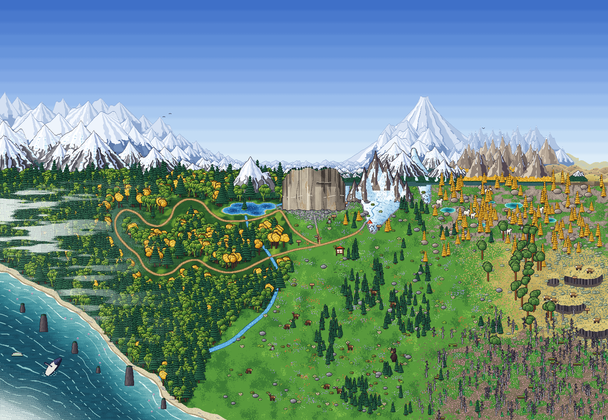

The second block-in of the larger world map, redrawn to your notes on the first. The middle is today's map with your changes worked in. Everything around it is new. The real map gets built from this.
Size
Show

What the numbers are
What is rough on purpose
The sea stacks, the ponderosa, the mesas and the whale are placeholders for shape and place. They get drawn properly.
The forest is thinner here than it will be, so the trail shows.
Animals are sparse. The south meadow gets many more, and they will move.
Nothing here animates. No water, wind, clouds or cats.
The live MVP is unchanged. None of this is in it yet.